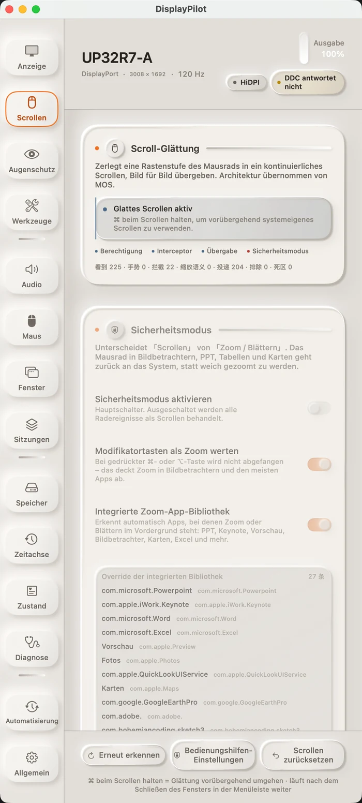

01 · Scroll-Glättung
Eine Raste, ein durchgehender Zug
Eine Rastenstufe ist kein einzelner Sprung mehr. Ereignisse werden gesammelt und bei jeder Bildwiederholung übergeben — pro Bild pending × (1 − e^(−dt/τ)). Weil der Abfall von der verstrichenen Zeit und nicht von der Bildzahl abhängt, fühlen sich 60 Hz und 144 Hz gleich an. In unserem Offline-Benchmark verbesserte sich das erste Bild bei 120 Hz von 3 auf 9 Punkte, und die Zeit bis 90 % sank von 158 ms auf 133 ms.
Fenster, die das Mausrad als präzise Eingabe oder Zoom behandeln — Terminals, Bildbetrachter, Präsentationen — werden standardmäßig an das System zurückgegeben. Mit gedrückter ⌘ kehrst du jederzeit zum nativen Scrollen zurück. Die Glättung ist standardmäßig aus: Sie übernimmt dein Mausrad nur, wenn du sie einschaltest. Die Oberfläche zeigt vier Live-Zähler — gesehen, Geste, abgefangen, übergeben —, damit du bei einer neuen Maus sofort siehst, in welcher Schicht etwas hängen bleibt.
